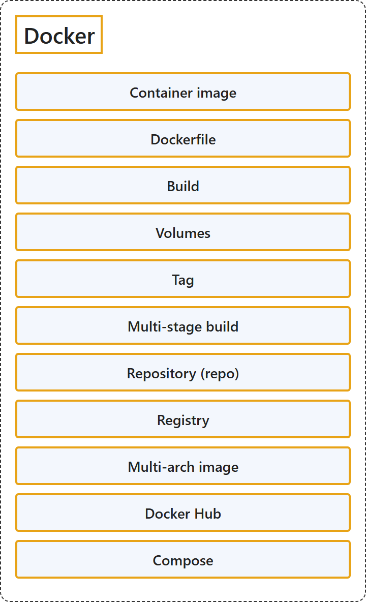

5.1 Docker
Classification

Glossary
| Term | Definition | 中文翻译 | Source |
|---|---|---|---|
| Container image 容器镜像 |
"A package with all the dependencies and information needed to create a container." | 一个包含所有依赖项和信息的包，这些依赖项和信息是创建容器所需要的。 | Microsoft, 2021, "Container image" entry |
| Dockerfile Dockerfile |
"A text file that contains instructions for building a Docker image." | 一个文本文件，其中包含构建 Docker 镜像的指令。 | Microsoft, 2021, "Dockerfile" entry |
| Build 构建 |
"The action of building a container image based on the information and context provided by its Dockerfile, plus additional files in the folder where the image is built." | 根据其 Dockerfile 提供的信息和上下文，加上构建镜像所在文件夹中的其他文件，构建容器镜像的操作。 | Microsoft, 2021, "Build" entry |
| Volumes 卷 |
"Offer a writable filesystem that the container can use." | 提供容器可以使用的可写文件系统。 | Microsoft, 2021, "Volumes" entry |
| Tag 标记 |
"A mark or label you can apply to images so that different images or versions of the same image (depending on the version number or the target environment) can be identified." | 一种可以应用到镜像上的标记或标签，用来识别不同的镜像或同一镜像的不同版本（取决于版本号或目标环境）。 | Microsoft, 2021, "Tag" entry |
| Multi-stage build 多阶段构建 |
"Is a feature, since Docker 17.05 or higher, that helps to reduce the size of the final images." | 是从 Docker 17.05 起提供的一项功能，有助于减小最终镜像的大小。 | Microsoft, 2021, "Multi-stage Build" entry |
| Repository (repo) 存储库（repo） |
"A collection of related Docker images, labeled with a tag that indicates the image version." | 相关 Docker 镜像的集合，用表示镜像版本的标记加以标注。 | Microsoft, 2021, "Repository (repo)" entry |
| Registry 注册表 |
"A service that provides access to repositories." | 一种提供存储库访问的服务。 | Microsoft, 2021, "Registry" entry |
| Multi-arch image 多体系结构镜像 |
"For multi-architecture (or multi-platform), it's a Docker feature that simplifies the selection of the appropriate image, according to the platform where Docker is running." | 即多体系结构（或多平台）镜像，是一项 Docker 功能，它根据 Docker 运行所在的平台，简化合适镜像的选择。 | Microsoft, 2021, "Multi-arch image" entry |
| Docker Hub Docker Hub |
"A public registry to upload images and work with them." | 一个公共注册表，用于上传镜像并使用这些镜像。 | Microsoft, 2021, "Docker Hub" entry |
| Compose Compose |
"A command-line tool and YAML file format with metadata for defining and running multi-container applications." | 一种命令行工具和 YAML 文件格式，带有用于定义和运行多容器应用程序的元数据。 | Microsoft, 2021, "Compose" entry |
References
- Microsoft. (2021). Docker terminology. .NET Microservices: Architecture for Containerized .NET Applications. Microsoft Learn. https://learn.microsoft.com/en-us/dotnet/architecture/microservices/container-docker-introduction/docker-terminology